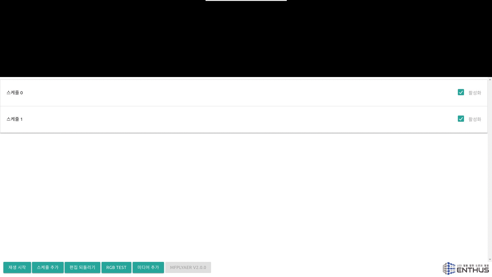
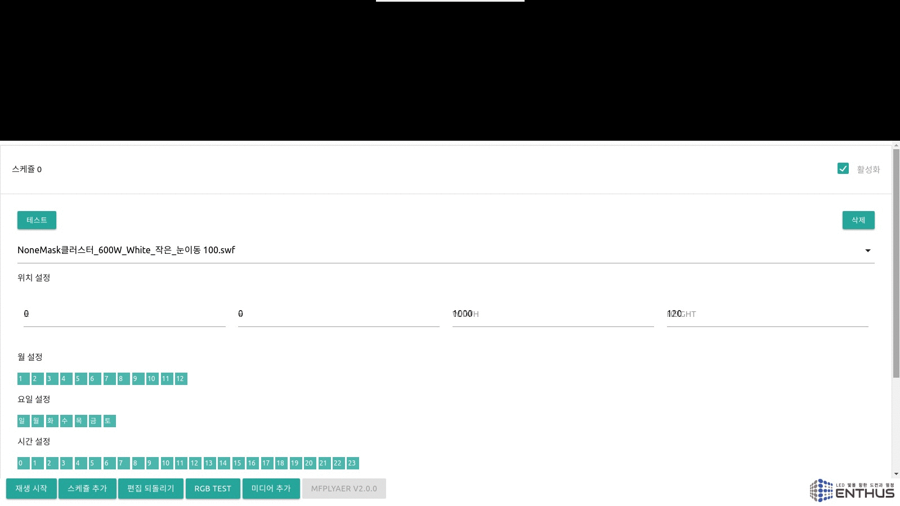

스케쥴 편집
스케쥴을 클릭하면 스케쥴 편집창이 열립니다.

미디어 선택
미디어 제목을 클릭하면 선택가능한 미디어 파일 리스트가 표시됩니다. 스케쥴을 추가하면 기본으로 rainbow.swf 가 선택되어 있고, 아래 메인 메뉴의 미디어 추가 버튼을 통해 미디어 파일을 리스트에 추가할 수 있습니다. 미디어 추가는 아래 미디어 추가 설명을 참조하십시요.

위치 설정
미디어가 재생될 위치와 가로 세로 크기 정보를 입력합니다.
- 위치 설정을 잘못 입력할 경우 아래의 메뉴 버튼을 가려 제어가 안될수 있으니 주의하시길 바랍니다.
- 위치 설정을 잘못 입력할 경우 아래의 메뉴 버튼을 가려 제어가 안될수 있으니 주의하시길 바랍니다.
테스트
선택된 미디어와 위치 설정이 올바르게 되었는지 확인하려면 테스트 버튼을 누릅니다. 아래 메인 메뉴의 정지 버튼을 통해 테스트를 멈출 수 있습니다.
삭제
삭제 버튼을 클릭하면 경고메시지와 함께 스케쥴이 삭제됩니다.

활성화
스케쥴을 지우지 않고 사용하지 않는 상태로 유지하려면 활성화 박스를 클릭해서 상태를 바꿉니다. 활성화 되지 않은 스케쥴은 정해진 시간에 재생되지 않습니다.

시간 설정
MFPlayer v2.0 은 반복 재생을 위한 시간을 설정합니다. 시간 설정 버튼이 선택되어 있는 시간에만 반복적인 재생을 합니다.
스케쥴 편집창을 스크롤해 내리면 월, 요일, 시간, 분 설정 버튼을 선택할 수 있습니다.
매년 1월 일요일에만 저녁 6시에서 8시사이에 30동안만 미디어가 재생할 경우 아래의 그림과 같이 설정합니다.

일년동안 저녁 6시에서 밤 12시까지 재생하는 예시는 아래와 같습니다.

일년동안 저녁 9시에 5 분동안 재생하는 예시는 아래와 같습니다.